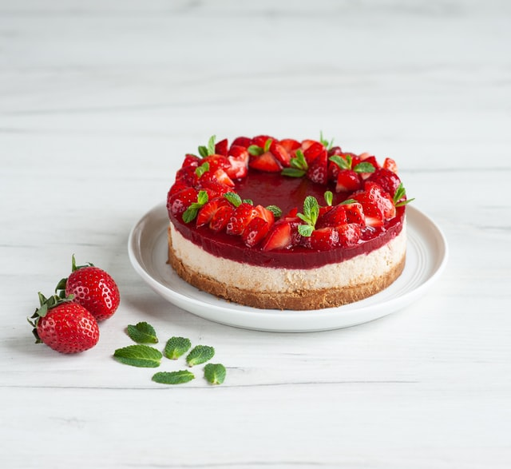
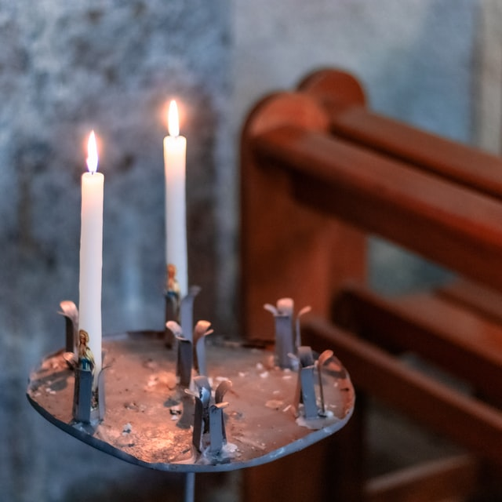

Apresento minha mídia que aborda aspectos que apresentam um pouco de como sou.
São quatro categorias da minha vida que reuni neste site, respectivamente:
Objetivo profissional: procuro me formar na FATEC-SP e Instituto PROA para
trabalhar na área de tecnologia.
Cozinhar: amo cozinhar doces!
Estudar: adoro ler e conhecer de tudo, desde da minha área profissional quanto a curiosidades.
Fé: a minha base para continuar a cada dia em pé e firme! Sigo atualmente na Umbanda.